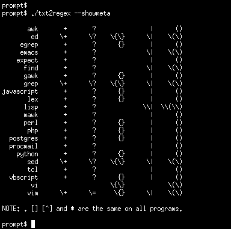

| Support for POSIX classes, as [:alpha:], [:lower:] and friends |
|
| Full support for groups, including a very nice opened/closed balance control |
|
Use --showmeta command line option to get information about programs metacharacters |
 |
Use --showinfo command line option to get information about a specific program |
|
Use --whitebg to run txt2regex on a white background terminal |
|
Use --make to generate ready-to-use regexes for all programs (--all) or for specific programs (--prog) |
|
| Full support for localization, see the program in japanese |
 |
Full screenshot with nice comments
Back to txt2regex main page